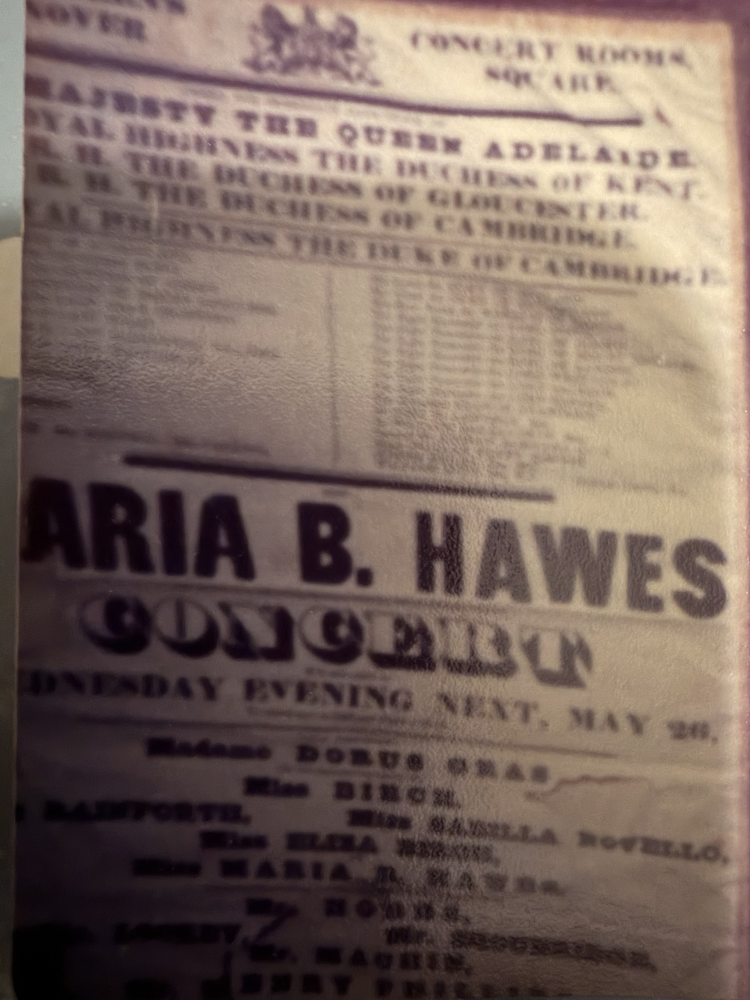
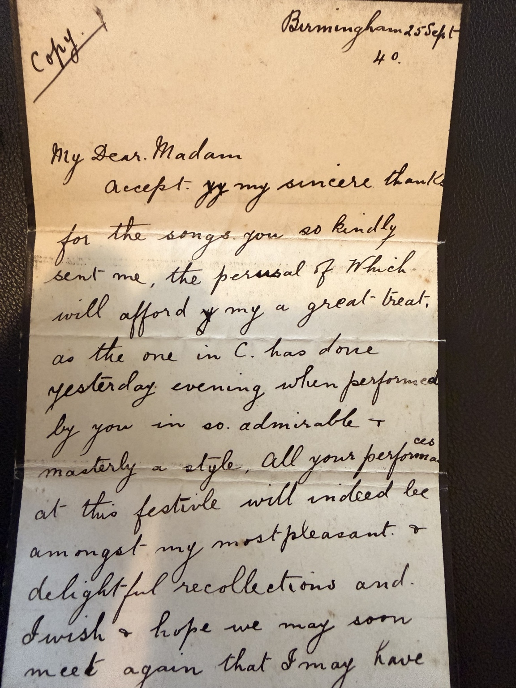
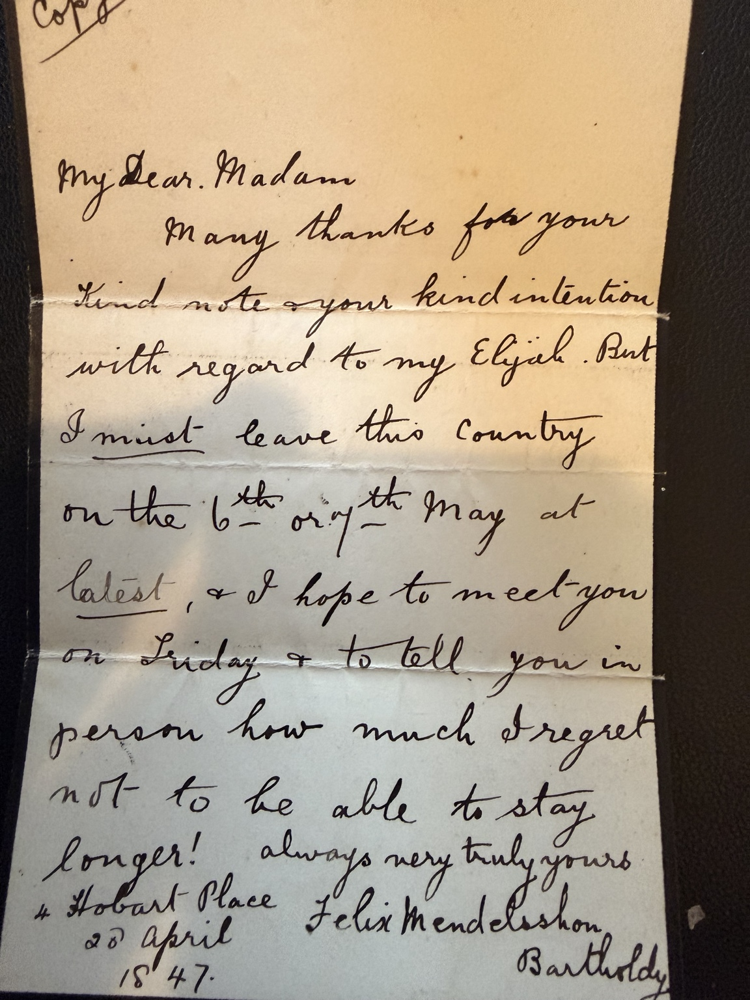
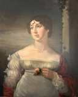

Biography
The contralto Maria Billington Hawes performed under Felix Mendelssohn at the Birmingham Music Festivals of 1840 and 1846. Two letters to her signed Mendelssohn, dated 1840 and 1847, survive in the family collection.
The Birmingham Festival of 1840
At the Birmingham festival of September 1840, Maria appeared alongside Felix Mendelssohn, who conducted his Lobgesang (Hymn of Praise) on 23 September. A family-held letter written from Birmingham on 25 September thanks Maria for sending songs, admires her performances at the festival and praises her extraordinary musical talents. An accompanying folded cover is addressed to Miss Maria B. Hawes at 7 Adelphi Terrace.
The original contralto in Elijah, 1846
A signed and annotated original festival programme held by the Morgan Library lists Miss M. B. Hawes at the Birmingham premiere of Elijah on 26 August 1846. F. G. Edwards’s 1896 history identifies her as the original singer of O rest in the Lord. Maria’s own letter of 5 April 1861, preserved at Birmingham City Archives, recounts that Mendelssohn decided to retain the aria after hearing her sing it at a rehearsal at Moscheles’s home. This is a retrospective claim by Maria, corroborating her central involvement but not independently proving that every part of the aria was composed exclusively for her.
Mendelssohn’s 1847 letter
A second family-held letter, dated 28 April 1847 from 4 Hobart Place, thanks Maria for her kindness regarding his Elijah. Mendelssohn regrets leaving England on 6 or 7 May and hopes to see her before departing. The surviving signatures read Felix Mendelssohn Bartholdy. These manuscripts document a professional relationship spanning at least seven years; the dated pages are marked “Copy” and are not presented as authenticated autograph originals.
Later life and family
Maria was a daughter of the musician William Hawes. She later became Maria Billington Merest following her 1847 marriage. Her career and family documents are being researched through contemporary programmes, letters and registers.
Her life recalled in 1886
John S. Bumpus’s obituary, “The Late Mrs. J. D. Merest (Maria B. Hawes), and Some Unpublished Letters of Mendelssohn”, appeared in The Musical Standard, vol. 30, no. 1143, 26 June 1886, pp. 406–407 (RIPM digitisation supplied by the family). It reports that Maria was born in Craven Street, Strand, in 1816 and named after her godmother, the singer Mrs. Billington. Her father William provided her musical education and vocal training.
According to Bumpus, her first public appearance was at her father’s annual concert in 1832, singing Purcell’s Mad Bess as a soprano. He describes her turn towards contralto repertoire after hearing Mrs. Alfred Shaw in 1835, and her success substituting for Shaw at the Westminster Abbey festival following the 1838 coronation. These are the obituary’s retrospective accounts.
Maria also composed songs. Bumpus names I’ll speak of thee, As I walked by myself and When first I heard the convent bells, among others. He reports that Liszt admired her song I’m the genius of the spring while dining at the Hawes home in Adelphi Terrace on 8 May 1840. Her death is recorded as 24 April 1886 at her residence in St. John’s Park, Ryde, Isle of Wight.
The obituary explicitly attributes O rest in the Lord to composition expressly for Maria. This is a published 1886 claim, distinct from direct evidence in Mendelssohn’s letters.
Mendelssohn, Leipzig and her autograph book
The accompanying correspondence shows Mendelssohn welcoming a dedication from Maria in 1842 and helping arrange a proposed engagement for eight Leipzig Gewandhaus concerts in October–December, followed by a benefit concert. His letters of 17 December 1843 and 10 January 1844 discuss timing, expenses and repertoire. The offer is documented; these letters alone do not establish that she made the visit.
Bumpus describes Maria requesting Mendelssohn’s autograph “for her book” at Birmingham in 1840; he supplied a musical quotation from St Paul. This suggests an autograph album, but these pages neither reproduce nor establish a diary. They provide no evidence of a personal relationship with Queen Victoria.
Explore the six letters published in 1886 and their provenance →
Facts and dates
- Recorded life dates
- 1816–1886
- Family-tree generation
- Generation 3
- Record status
- family records and published biography
- Spouse or partner
- James Drage Merest
- Born
- 1816
- Died
- 1886
- Occupation
- Contralto singer and composer
- 1840
- Birmingham festival; Mendelssohn letter of 25 September
- 1846
- Original contralto at Elijah premiere, 26 August
- 1847
- Mendelssohn letter dated 28 April
1816–1886
Family records
Dates and events recorded in the family records. Month-only dates may be registration periods. Where sources disagree, the differences are noted below.
- Birth
- 1816 · Middlesex, England.
Source: England & Wales, FreeBMD Death Index, 1837-1915 Record ↗; 1841 England Census — Class: HO107; Piece: 739; Book: 6; Civil Parish: St Martin in The Fields; County: Middlesex; Enumeration District: 19; Folio: 52; Page: 6; Line: 20; GSU roll: 438840 Record ↗ - Baptism
- 21 Jun 1816 · Saint Martin IN The Fields,Westminster,London,England
Source: London, England, Church of England Births and Baptisms, 1813-1906 — London Metropolitan Archives, Westminster St Martin in the Fields, Register of Baptism, DL/T/093, Item 015 Record ↗; England, Select Births and Christenings, 1538-1975 Record ↗ - Residence
- 1841 · St Martin in The Fields, Middlesex, England
Source: 1841 England Census — Class: HO107; Piece: 739; Book: 6; Civil Parish: St Martin in The Fields; County: Middlesex; Enumeration District: 19; Folio: 52; Page: 6; Line: 20; GSU roll: 438840 Record ↗
Name in family records: Maria Dowding Billington Hawes.
Original family records
Open a record to see its transcription, original photograph where published, and research notes. Only verified repository images are previewed below.

Only surviving image of this poster known to the contributing family.
View original image and transcription notes →
25 September 1840, praising Maria’s festival performances; view manuscript photographs and transcription
Read document and research notes →
28 April 1847, written from Hobart Place; view manuscript photographs and transcription
Read document and research notes →Further reading and sources
1841 household transcript: 7 Adelphi Terrace — HO 107/739/6, folio 52, page 6
- Original 1846 festival programme (Morgan Library)
- History of Elijah by F. G. Edwards (1896)
- Maria’s 1861 recollection quoted in academic research
- Maria Billington Hawes biography
- FamilySearch person MC8L-73P — supplied research lead; identity and attached sources not yet verified
This is a research biography, not a fully verified pedigree. Original photographs, contemporary records, later copies, information in family records and family recollections are distinguished where their evidential status is known. Details of living descendants are omitted.
Family connections


Previously attributed here to Maria. Antony Greenfield reports that this portrait forms a pair with William Hawes’s portrait and suggests it instead depicts his wife, Elizabeth Mullinex Hawes, Maria’s mother. Sitter identification remains unconfirmed; the image is not used as Maria’s tree portrait.
Oxford Dictionary of National Biography
Maria Dowding Billington Hawes: Oxford DNB cross-reference directs readers to the entry for William Hawes. The full article has not been consulted.